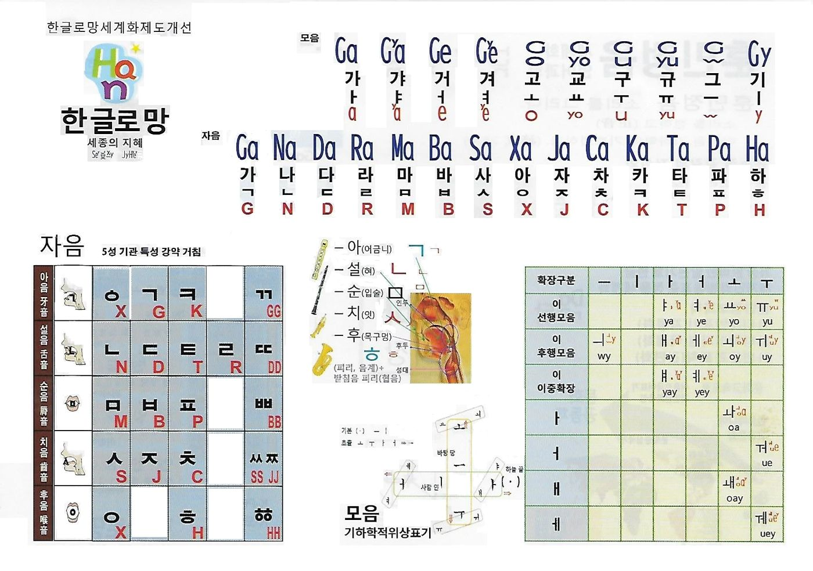

정음 교육 · 첫걸음
한글로망은 한글을 로마자로 적되, 로마자에서 다시 한글로 그대로 되돌릴 수 있게 만든 표기입니다. 이 쪽에서는 한글로망이 무엇인지, 자음과 모음을 어떤 로마자에 대응시키는지, 음절을 어떻게 쓰는지를 차례로 익힙니다. 마지막에는 직접 바꿔 볼 수 있는 변환기가 있습니다.
한글로망 교육은 세 단계로 이어집니다. 글자의 약속을 먼저 익히고, 그 글자가 가리키는 소리를 입으로 정확히 내는 훈련을 한 뒤, 같은 원리를 주소와 단위에 씁니다.
한글은 적힌 대로 읽히는 글자입니다. 그런데 현행 국어 로마자 표기법은 소리를 따라 적기 때문에, 로마자로 옮기는 순간 원래 철자를 잃습니다. Silla를 보고 '신라'를 떠올릴 수 없고, 같은 성씨가 여러 표기로 흩어집니다.
| 한글 | 현행 표기 | 한글로망 | 무엇이 달라지나 |
|---|---|---|---|
| 신라 | Silla | SynRa | 철자 '신'이 남는다 |
| 독립문 | Dongnimmun | DogRybMun | 세 음절 경계가 보인다 |
| 종로 | Jongno | JoxRo | 받침 ㅇ과 초성 ㄹ이 남는다 |
| 이 (성씨) | Lee, Yi, Rhee | Xy | 한 가지로 적힌다 |
| 박 (성씨) | Park, Pak, Bak | Bag | 한 가지로 적힌다 |
| 외 / 왜 / 웨 | oe / wae / we | Xoy / Xoay / Xuey | 글자의 짜임(ㅗ+ㅣ, ㅗ+ㅐ, ㅜ+ㅔ)이 보인다 |
훈민정음은 자음을 소리 나는 자리에 따라 다섯으로 나누었습니다. 한글로망도 그 자리 순서를 그대로 따르고, 가로로는 약한 소리에서 센 소리로 갑니다.
| 소리 자리 | 울림·흐름 | 예사소리 | 거센소리 | 흐름 | 된소리 |
|---|---|---|---|---|---|
| 아음 牙音 (어금니) | ㅇX | ㄱG | ㅋK | ㄲGG | |
| 설음 舌音 (혀) | ㄴN | ㄷD | ㅌT | ㄹR | ㄸDD |
| 순음 脣音 (입술) | ㅁM | ㅂB | ㅍP | ㅃBB | |
| 치음 齒音 (이) | ㅅS | ㅈJ | ㅊC | ㅆSS ㅉJJ | |
| 후음 喉音 (목구멍) | ㅇX | ㅎH | ㆅHH |
기본 순서는 G N D R M B S X J C K T P H, 곧 가나다라마바사아자차카타파하입니다.
모음은 로마자 여섯 자 a e o u w y로 모두 적습니다. 기본 모음 열 자는 다음과 같습니다.
| ㅏa | ㅑya | ㅓe | ㅕye | ㅗo | ㅛyo | ㅜu | ㅠyu | ㅡw | ㅣy |
나머지 모음은 새 글자를 만들지 않고, 천지인 조합 구조대로 기본 모음을 이어 씁니다. 소리가 비슷해져 맞춤법이 자주 틀리는 겹모음일수록, 적힌 짜임이 그대로 보여 구별이 쉬워집니다.
| 규칙 | 만드는 법 | 모음 |
|---|---|---|
| 이 선행 | y + 기본 모음 | ㅑ ya · ㅕ ye · ㅛ yo · ㅠ yu |
| 이 후행 | 기본 모음 + y | ㅢ wy · ㅐ ay · ㅔ ey · ㅚ oy · ㅟ uy |
| 이 이중확장 | y + 기본 모음 + y | ㅒ yay · ㅖ yey |
| ㅗ·ㅜ 결합 | ㅗ 또는 ㅜ + 뒤 모음 | ㅘ oa · ㅙ oay · ㅝ ue · ㅞ uey |
| 자주 틀리는 곳 | 한글로망 | 드러나는 짜임 |
|---|---|---|
| 내 / 네 | Nay / Ney | ㅏ+ㅣ / ㅓ+ㅣ |
| 외 / 왜 / 웨 | Xoy / Xoay / Xuey | ㅗ+ㅣ / ㅗ+ㅐ / ㅜ+ㅔ |
| 얘 / 예 | Xyay / Xyey | 이+ㅏ+이 / 이+ㅓ+이 |
| 의 | Xwy | ㅡ+ㅣ |
한글로망 글꼴에서는 앞에 붙는 y와 뒤에 붙는 y를 모음 위의 작은 점 부호로 줄여 보여 줍니다. 원 대응표의 Gya, Gye가 그 모양입니다. 글꼴이 없는 곳에서는 이 쪽처럼 y를 그대로 씁니다.
한 음절은 초성 대문자 + 중성 소문자 + 받침 소문자로 씁니다. 받침은 초성과 같은 로마자를 소문자로 씁니다. 받침 ㅇ은 x입니다.
파랑 초성검정 중성갈색 받침
| 낱말 | 음절로 나누기 | 한글로망 |
|---|---|---|
| 광화문 | Goax · Hoa · Mun | GoaxHoaMun |
| 한글로망 | Han · Gwr · Ro · Max | HanGwrRoMax |
| 짧아 | Jjarb · Xa | JjarbXa |
| 없어 | Xebs · Xe | XebsXe |
| 세종의 지혜 | Sey · Jox · Xwy Jy · Hyey | SeyJoxXwy JyHyey |
기본 표기(Texture)는 초성 ㅇ을 언제나 X로 씁니다. 더 짧게 쓰고 싶을 때는 초성 ㅇ의 X를 빼고 모음 첫 글자를 대문자로 씁니다. 대문자 모음으로 시작하는 음절은 ㅇ 음절이므로 여전히 되돌릴 수 있습니다.
| 한글 | 기본 표기 | X 간략화 |
|---|---|---|
| 정음 | JexXwm | JexWm |
| 서울 | SeXur | SeUr |
| 없어 | XebsXe | EbsE |
| 의 | Xwy | Wy |
| 이 (성씨) | Xy | Y |
받침 ㅇ의 x는 간략화에서도 그대로 둡니다.
한글을 넣으면 한글로망으로, 한글로망을 넣으면 한글로 바꿉니다. 한글이 아닌 글자와 띄어쓰기는 그대로 둡니다.
먼저 손으로 적어 보고, 답을 열어 확인하세요. 위 변환기로 확인해도 됩니다.
DayHanMynGug
XoyGug XwySa
ㅚ는 ㅗ+ㅣ라서 oy, ㅢ는 ㅡ+ㅣ라서 wy입니다.
GgocXyp
받침 ㅊ은 c, 받침 ㅍ은 p입니다. 한글 표기 그대로입니다.
부산 경주
양쌔. 대문자 X, Ss에서 음절이 나뉩니다. 'yax'는 ㅑ와 받침 ㅇ, 'ay'는 ㅐ입니다.

한글로망은 글자마다 소리를 하나로 정했습니다. 이제 그 소리를 실제로 정확히 내는지 확인할 차례입니다. 정음 발음 훈련 교재는 이 쪽에서 익힌 글자와 그대로 이어집니다.